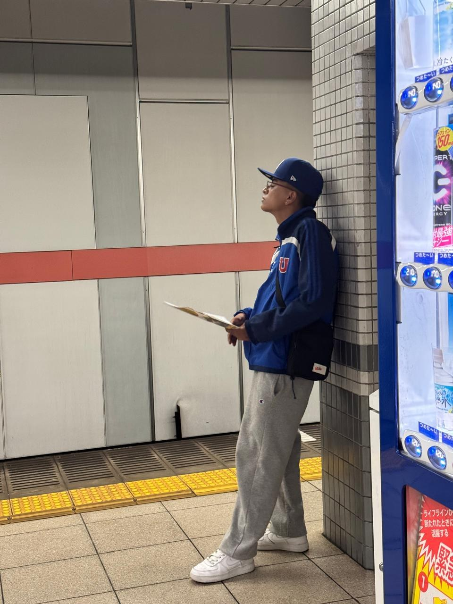
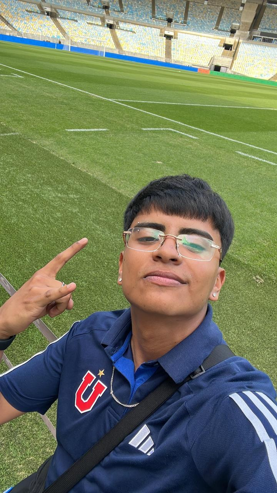

SOBRE MÍ.
De la confección y el territorio a la experimentación con imagen, sonido e interacción.
01 / QUIÉN SOY
CARLOS
MELLA.
Soy Carlos Mella, estudiante de Diseño en la Universidad Diego Portales, con mención en Textil e Indumentaria.
Mi acercamiento al diseño de moda está profundamente relacionado con las mujeres de mi familia, quienes han sido una influencia importante en mi vida y en la manera en que entiendo la moda.
Me interesa el territorio y cómo los espacios que habitamos construyen nuestra identidad. También me gusta viajar, conocer otras culturas y descubrir nuevas formas de entender el diseño.
Durante el último tiempo también he explorado herramientas digitales que me permiten experimentar con la imagen, el sonido y la interacción, ampliando mi práctica más allá de la materialidad textil.

DEL PATRÓN
A LA PIEZA.
FORMACIÓN / UDP
TEXTIL E INDUMENTARIA
Estudio Diseño en la Universidad Diego Portales, con mención en Textil e Indumentaria. Me interesan la moda conceptual, las prendas utilitarias, la experimentación material y la reutilización de textiles.
Trabajo con patronaje, confección, intervención textil e investigación visual; en los proyectos web exploro herramientas como HTML, CSS y JavaScript.
EXPERIENCIA / TALLER AUTÓNOMO
KEMARIA DOLOREZ
Actualmente trabajo en Kemaria Dolorez, un taller autónomo especializado en ropa deportiva para Muay Thai y ropa urbana.
Participo principalmente en el patronaje, corte de telas y confección de prendas. El diseño de las propuestas está a cargo del diseñador principal.
03 / QUÉ ME MUEVE
FUERA DEL
TALLER.
Fuera del diseño, la música y el fútbol ocupan un lugar importante en mi vida. Escucho rap, reggaetón y trap, me interesa la cultura urbana y soy hincha de Universidad de Chile.
También me interesan los lugares y las comunidades con los que me relaciono. He tenido la oportunidad de viajar a distintos países y conocer otras culturas; esas experiencias amplían mis referentes y mi forma de observar.
El fútbol también ha encontrado espacio en mis proyectos digitales, especialmente en PULSO 90 y A 12 PASOS DE LA GLORIA.

04 / CONTACTO
CONVERSEMOS.
carlos.mella1@mail.udp.cl